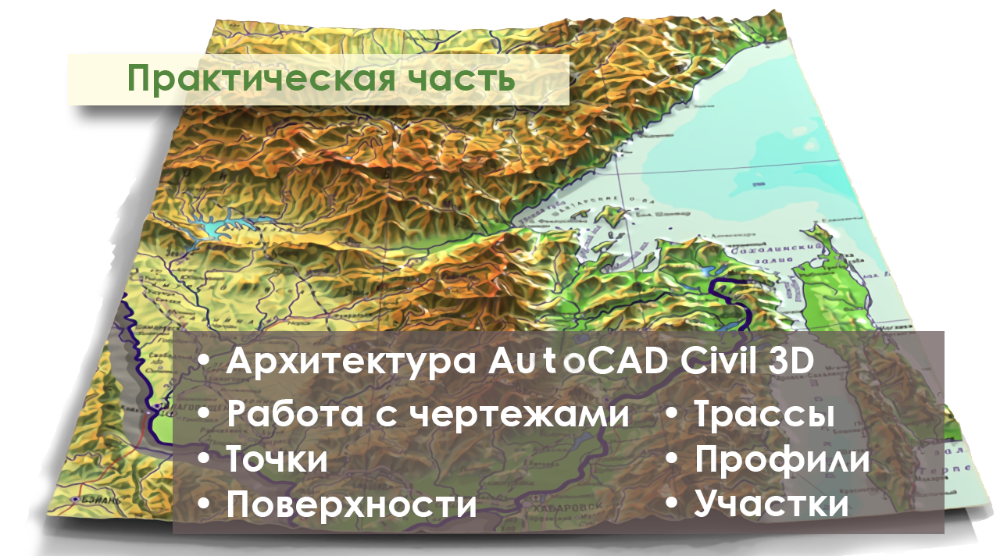

Практика

Раздел Практика включает в себя разделы, необходимые для полного понимания студентом проходимой дисциплины.
Включает в себя разделы об архитектуре AutoCAD Civil 3D, о работе в нем с чертежами, точками, поверхностями, трассами, профилями и участками.